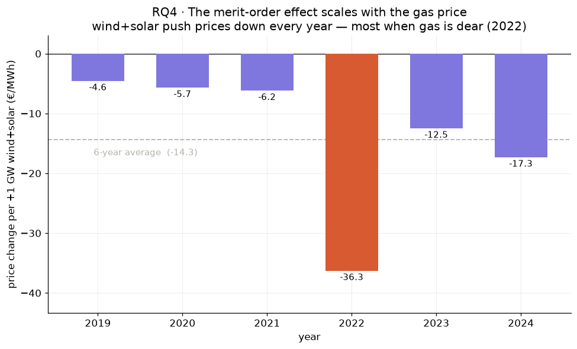

Question: Do higher renewable shares push down Austria’s day-ahead electricity price — the merit-order effect — and how does that effect change with the gas-price regime?
Electricity is priced by merit order: each hour, plants are dispatched cheapest-first until supply meets demand, and the last (most expensive) plant switched on sets a single clearing price paid to everyone. Wind and solar bid at ≈zero marginal cost (no fuel), so more renewable supply pushes the price-setting plant down the stack → a lower price. In Austria the flexible price-setter at the top of the stack is fossil gas (confirmed in EDA).
This is the price-side mirror of RQ3. There, growing solar deepened the midday net-load belly; here, those same midday hours are when the day-ahead price craters. The effect is a within-day phenomenon, so — like RQ3 and unlike RQ2 — we stay at hourly grain.
The central challenge is the 2022 gas crisis, which lifted the price level enormously (monthly median ~€40 → ~€470 → ~€80). That regime shift dwarfs the merit-order tilt, so the renewable effect must be isolated from it rather than measured alongside it.
Data
Three hourly ENTSO-E tables, all stored UTC, joined on ts_utc and converted to Europe/Vienna only at the display layer:
Table
Grain
Source
Column(s) used
prices
hourly
ENTSO-E day-ahead
price_eur_mwh
demand
hourly
ENTSO-E (Austrian Power Grid / APG), resampled from 15-min
demand_mw
generation
hourly
ENTSO-E (APG), resampled from 15-min
mw by fuel_type → wind+solar, hydro, biomass
The inner join on ts_utc yields 52,607 hours — one fewer than RQ3’s 52,608, because prices carries a trailing orphan hour (2025-01-01 00:00 UTC) that an inner join drops, and the < 2025-01-01 local filter removes the single UTC hour that spills into Vienna-2025.
Renewable supply is summed out of the long generation table and decomposed: variable renewable energy (VRE = wind + solar), hydro (run-of-river + reservoir + pumped, generation side), and biomass. Hydro averages ~4× VRE (4.3 vs 1.1 GW) but is dispatchable; only VRE is the clean, weather-driven driver (see Method). Residual load (demand − all renewables) goes negative in 25%+ of hours — the renewable-oversupply hours that push prices toward the floor.
Method — OLS in levels, HAC/Newey–West standard errors
The merit-order effect is a slope — the €/MWh price change per gigawatt of wind+solar — estimated by OLS on price levels (not logs: the outcome spans negative prices, and the effect of interest is an additive €/MWh shift). Three obstacles shape the specification:
The 2022 regime. A calendar-year fixed effect C(year) absorbs the gas-crisis level shift, so the renewable slope is read within each price regime rather than across the 2019 → 2022 → 2023 jump.
Demand as a confound. Higher-demand hours are pricier, so demand_gw enters as a control; merit-order theory predicts its coefficient mirrors VRE’s with the opposite sign, since only residual load (demand − renewables) sets the price.
Severe autocorrelation. Hourly prices are near-perfectly serially correlated (Durbin–Watson ≈ 0.05), so every standard error is HAC / Newey–West with maxlags=24 (one daily cycle) — the same robustness call as RQ2.
The estimate climbs a specification ladder (section 4: VRE only → + demand → + year fixed effect); a slope that holds steady across the rungs is the robustness signal. A vre_gw × C(year) interaction (section 5) then asks whether the effect strengthens with the marginal fuel cost. The predictor is VRE, not all renewables — reservoir and pumped hydro are dispatchable, so they respond to price and would be endogenous.
Setup
Code
# imports, paths, house style, read-only DuckDB connectionimport sysfrom pathlib import Pathfrom functools import partialfrom typing import castimport duckdbimport matplotlib.pyplot as pltfrom matplotlib.lines import Line2Dfrom IPython.display import displayimport numpy as npimport pandas as pdimport statsmodels.formula.api as smfPROJECT_ROOT = Path.cwd().parentifstr(PROJECT_ROOT) notin sys.path: sys.path.insert(0, str(PROJECT_ROOT))from src.viz import set_house_style, PALETTE, save_headline_fig, save_qa_figset_house_style()save_qa = partial(save_qa_fig, notebook="07_rq4_merit_order")# read_only=True — RQ notebooks only SELECT; a stray write raises instead of mutating the DBDB_PATH = PROJECT_ROOT /"data"/"processed"/"austria_energy.duckdb"con = duckdb.connect(str(DB_PATH), read_only=True)
# one row per hour (Vienna-local), 2019–2024. Three ENTSO-E tables joined on the UTC# instant, converted to local time only at the display layer (the house rule).## Renewable supply is summed out of the long `generation` table with conditional# aggregates — SUM(...) FILTER (WHERE ...). Components are kept separate so we can see# which ones actually track price before fixing a single "renewables" definition (step 2).# flow = 'generation' is the supply side and also drops the pumped-storage *pumping* rows.df = con.sql("""WITH-- 1. Renewable generation, pivoted to one row per hour.-- FILTER is DuckDB's conditional aggregate — cleaner than SUM(CASE WHEN ...).-- 'Hydro%' = run-of-river + reservoir + pumped (generation side). Geothermal /-- 'Other renewable' are ~0 MW in AT, so omitting them is immaterial.ren AS ( SELECT ts_utc, SUM(mw) FILTER (WHERE fuel_type = 'Solar') AS solar_mw, SUM(mw) FILTER (WHERE fuel_type = 'Wind Onshore') AS wind_mw, SUM(mw) FILTER (WHERE fuel_type LIKE 'Hydro%') AS hydro_mw, SUM(mw) FILTER (WHERE fuel_type = 'Biomass') AS biomass_mw FROM generation WHERE flow = 'generation' GROUP BY ts_utc),-- 2. Inner-join the three hourly tables on the UTC instant.-- INNER JOIN silently drops the prices-only orphan hour (2025-01-01 00:00 UTC).joined AS ( SELECT d.ts_utc, p.price_eur_mwh AS price, d.demand_mw, COALESCE(r.solar_mw, 0) AS solar_mw, COALESCE(r.wind_mw, 0) AS wind_mw, COALESCE(r.hydro_mw, 0) AS hydro_mw, COALESCE(r.biomass_mw, 0) AS biomass_mw FROM demand d JOIN prices p USING (ts_utc) JOIN ren r USING (ts_utc))SELECT ts_utc AT TIME ZONE 'Europe/Vienna' AS ts_local, EXTRACT(year FROM ts_utc AT TIME ZONE 'Europe/Vienna') AS year, EXTRACT(hour FROM ts_utc AT TIME ZONE 'Europe/Vienna') AS hour_local, price, demand_mw, solar_mw + wind_mw AS vre_mw, -- variable renewables hydro_mw, biomass_mw, solar_mw + wind_mw + hydro_mw + biomass_mw AS ren_total_mw, -- all renewables demand_mw - (solar_mw + wind_mw + hydro_mw + biomass_mw) AS residual_load_mwFROM joinedWHERE ts_utc AT TIME ZONE 'Europe/Vienna' < TIMESTAMP '2025-01-01' -- drop UTC→local spill into 2025ORDER BY ts_local""").df()print(f"frame: {len(df):,} hourly rows | {df['ts_local'].min()} → {df['ts_local'].max()}")print(f"years: {sorted(df['year'].unique())}")display(df[["price", "demand_mw", "vre_mw", "hydro_mw", "ren_total_mw", "residual_load_mw"]] .describe().round(1))df.head()
# simple price↔driver correlations, pooled across 2019–2024 — confounded by demand,# time-of-day, and the 2022 regime (Section 4 fixes that). Pearson (linear) + Spearman# (rank, robust to the price spikes), side by side. Uses df from Section 1.cols = ["vre_mw", "residual_load_mw", "demand_mw"]def corr_table(frame):return pd.DataFrame({"pearson": [frame["price"].corr(frame[c]) for c in cols],"spearman": [frame["price"].corr(frame[c], method="spearman") for c in cols], }, index=cols).round(3)print("Raw correlation of day-ahead price with each driver — pooled, 2019–2024:")display(corr_table(df))print("\nSame, 2024 only (one regime, most solar) — watch the confound shrink:")display(corr_table(df[df["year"] ==2024]))
Raw correlation of day-ahead price with each driver — pooled, 2019–2024:
pearson
spearman
vre_mw
-0.132
-0.090
residual_load_mw
0.210
0.204
demand_mw
0.194
0.251
Same, 2024 only (one regime, most solar) — watch the confound shrink:
pearson
spearman
vre_mw
-0.409
-0.424
residual_load_mw
0.417
0.409
demand_mw
0.484
0.466
4 · Merit-order regression (specification ladder)
Code
# three nested OLS models, all with HAC/Newey–West SEs (maxlags=24 — one daily cycle;# the rule-of-thumb gives ~16, rounded up to span the diurnal autocorrelation. Same# robustness call as RQ2). Drivers in GW → coefficients read as €/MWh per GW. The VRE# coefficient in model 3, holding demand and year fixed, is the merit-order effect.dfm = df.assign(vre_gw=df["vre_mw"] /1000, demand_gw=df["demand_mw"] /1000)# Collinearity sanity check — VRE and demand shouldn't track each other much.print(f"corr(vre, demand) = {cast(pd.Series, dfm['vre_gw']).corr(cast(pd.Series, dfm['demand_gw'])):.3f}\n")specs = {"1. price ~ vre": "price ~ vre_gw","2. + demand": "price ~ vre_gw + demand_gw","3. + year FE (full)": "price ~ vre_gw + demand_gw + C(year)",}rows, fits = [], {}for name, formula in specs.items(): f = smf.ols(formula, data=dfm).fit(cov_type="HAC", cov_kwds={"maxlags": 24}) fits[name] = f rows.append({"spec": name,"vre coef (€/MWh per GW)": round(f.params["vre_gw"], 2),"HAC std err": round(f.bse["vre_gw"], 2),"p-value": f"{f.pvalues['vre_gw']:.1e}","R²": round(f.rsquared, 3), })print("Specification ladder — VRE coefficient as confounders are controlled:")display(pd.DataFrame(rows).set_index("spec"))print("\n"+"="*70+"\nFull model 3:")print(fits["3. + year FE (full)"].summary())
corr(vre, demand) = 0.065
Specification ladder — VRE coefficient as confounders are controlled:
# price ~ vre_gw * C(year) + demand_gw lets the VRE slope differ each year (HAC SEs).# `*` expands to vre_gw + C(year) + their interaction. 2019 is the base slope; each# vre_gw:C(year)[T.yyyy] term is that year's slope difference from 2019.# Uses dfm and smf from Section 4.fit_int = smf.ols("price ~ vre_gw * C(year) + demand_gw", data=dfm).fit(cov_type="HAC", cov_kwds={"maxlags": 24})base = fit_int.params["vre_gw"] # 2019 sloperows = []for y in [2019, 2020, 2021, 2022, 2023, 2024]: delta = fit_int.params.get(f"vre_gw:C(year)[T.{y}]", 0.0) # 2019 → 0 rows.append({"year": y, "VRE slope (€/MWh per GW)": round(base + delta, 1)})print("Merit-order effect (VRE slope) by year:")display(pd.DataFrame(rows).set_index("year"))
Merit-order effect (VRE slope) by year:
VRE slope (€/MWh per GW)
year
2019
-4.6
2020
-5.7
2021
-6.2
2022
-36.3
2023
-12.5
2024
-17.3
6 · Headline — merit-order effect by year
Code
# merit-order effect by year (Section 5's interaction) + the pooled average (Section 4, model 3).# Every year wind+solar push the price down; the effect scales with the gas regime — modest# in calm years, ~6× larger in the 2022 crisis. Uses fit_int (Section 5) and fits (Section 4).years = [2019, 2020, 2021, 2022, 2023, 2024]slope_by_year = { y: float(fit_int.params["vre_gw"] + fit_int.params.get(f"vre_gw:C(year)[T.{y}]", 0.0))for y in years}pooled =float(fits["3. + year FE (full)"].params["vre_gw"])vals = [slope_by_year[y] for y in years]colors = [PALETTE["accent"] if y ==2022else PALETTE["price"] for y in years]fig, ax = plt.subplots(figsize=(9, 5.5))ax.bar(years, vals, color=colors, width=0.62, zorder=3)ax.axhline(0, color="black", lw=0.8, zorder=2)ax.axhline(pooled, color=PALETTE["muted"], lw=1.2, ls="--", zorder=2)ax.text(2018.95, pooled -1.5, f"6-year average ({pooled:.1f})", va="top", ha="left", color=PALETTE["muted"], fontsize=10)for x, v inzip(years, vals): ax.text(x, v -0.4, f"{v:.1f}", ha="center", va="top", fontsize=10)ax.set_ylim(min(vals) -7, 3)ax.set_xticks(years)ax.set_xlabel("year")ax.set_ylabel("price change per +1 GW wind+solar (€/MWh)")ax.set_title("RQ4 · The merit-order effect scales with the gas price\n""wind+solar push prices down every year — most when gas is dear (2022)")plt.tight_layout()save_headline_fig(fig, "rq4_merit_order")plt.show()
saved → figures/headline/rq4_merit_order.png

Code
# close the connectioncon.close()
Finding
Finding (RQ4). Higher wind+solar generation reliably pushes Austria’s day-ahead price down — by €14.3/MWh per gigawatt on average over 2019–2024, holding demand and the price regime fixed (p < 0.001, autocorrelation-robust standard errors). This merit-order effect scales sharply with the marginal fuel cost: only ~€5/MWh per GW in the calm 2019–21 years, but €36/MWh per GW during the 2022 gas crisis, when each gigawatt of renewables displaced far costlier gas.